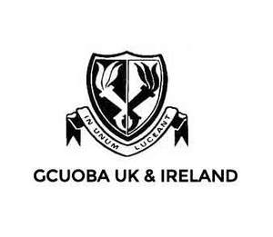
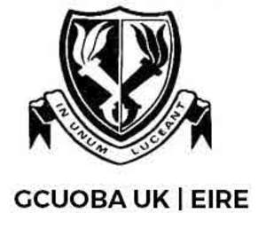

Trade Mark Journal No.2025/018 2 May 2025
UK00004190413 16 April 2025 (41)
Mark 1

Mark 2

- Class 41
- Education; Education and training; Academies [education]; Education and instruction; Education services; Academy education services; Academy services (Education -); Education academy services; Education, teaching and training; Education (Religious -); Music education; Training and education services; Education and training services; Education and instruction services; Education examination; Career counseling [education]; Provision of training and education; Provision of education and training; Providing of education; Physical education; Education academy services for teaching languages; Entertainment, education and instruction services; Computer education training; Education information; Information (Education -); Computer education training services; Boarding school education; Education and training consultancy; Sports education services; Technological education services; Management of education services; Management education services; Education services relating to nutrition; Education services related to the arts; Education services relating to health; Education academy services for teaching construction drafting; Singing education; Education courses relating to automation; Career counselling relating to education and training; Education and training in the field of music and entertainment; Education and training services in the field of occupational health and safety; Vocational education relating to personal safety; Education information services; Secondary school educational services; Sporting education services; Education services relating to business training; Education, entertainment and sport services; Training or education services in the field of life coaching; Educational and teaching services; Career counselling [training and education advice]; Education in the field of computing; Vocational education for young people; Education, entertainment and sports; Education services relating to music; Education in the field of occupational health and safety; Career advisory services (education or training advice); Education in the field of computing science; Education services relating to commerce; Education services relating to industry; Education services relating to hygiene; Provision of facilities for education; Provision of education courses relating to computers; Education services relating to photography; Organization of competitions for education or entertainment; Education services relating to sports; Education services relating to food technology; Education services relating to conservation of the environment; Education and training in the field of business management; Foreign language education services.
GCUOBA UK and Ireland LTD